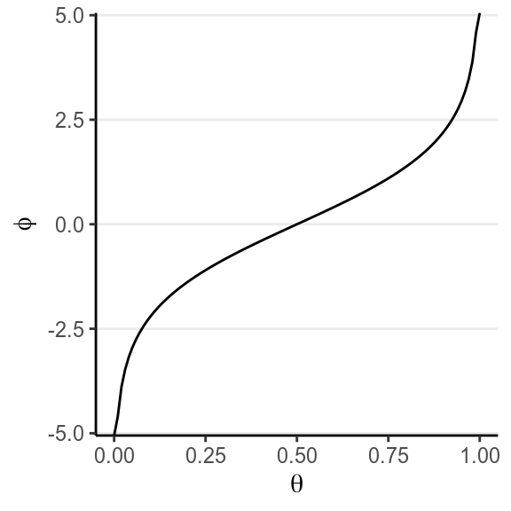
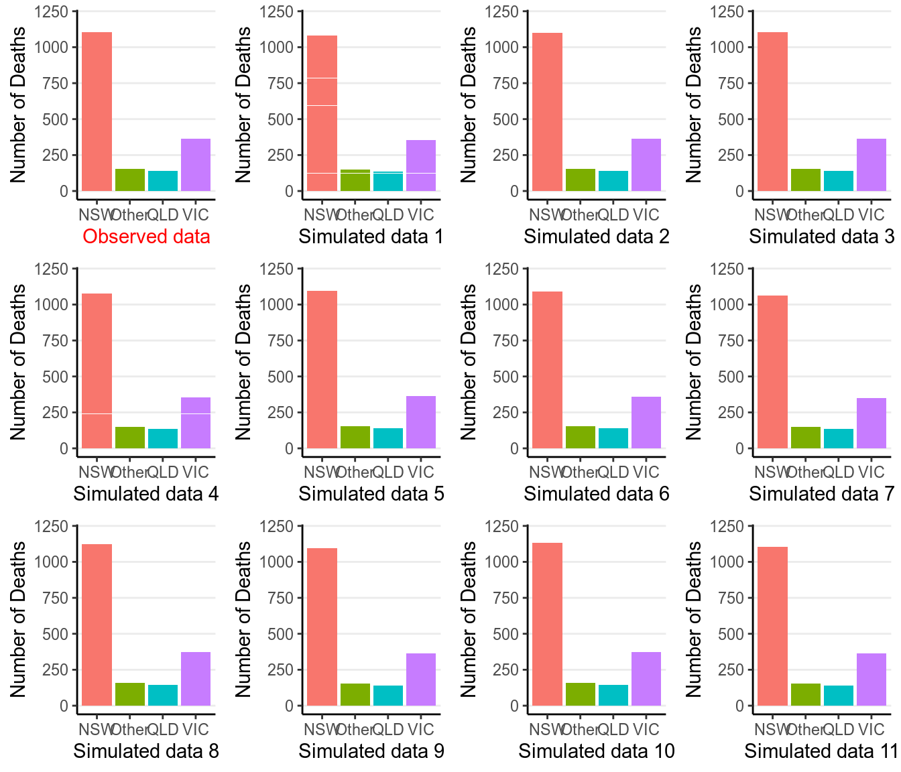
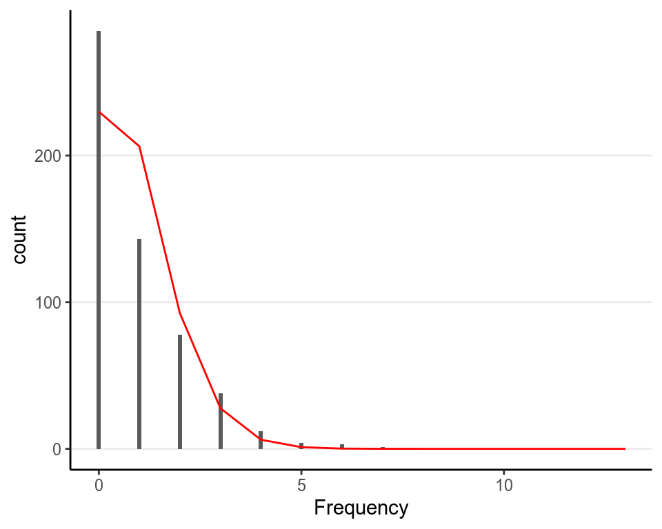
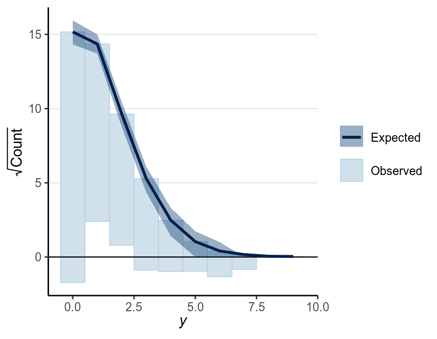

Chapter 3 One-Parameter Models
This lecture surveys some very simple models with one parameter for some real research data. In your research it is rare to study only one variable with one parameter, but the concepts you learn in this lecture will naturally generalize to more regular statistical models, like regression and multilevel models. Specifically we will consider two models:
- Binomial/Bernoulli data
- Poisson data
3.1 Binomial/Bernoulli data
You’ve already seen the binomial model in the AIDS example. When you have one event with two outcomes, like flipping a coin or sampling a respondent and asking whether he or she has a college degree, the variable is called a Bernoulli variable. Mathematically we will denote one outcome as success and coded as 1, and the other as failure and coded as 0 (poor terminology may be, but that’s by convention). For example, if the variable is coin flipping, we have 1 = tail, 0 = head. If the variable is whether the respondent has a college degree, it can be 1 = college or above, 0 = no college. Therefore, in the AIDS example, each observation is considered a “Bernoulli” outcome (Alive vs. Dead). An additional thing to note for the Bernoulli/binomial model is that, instead of setting the prior on \(\theta\), sometimes we’re more interested in setting the prior for a transformed parameter that has values between \(-\infty\) and \(\infty\), such as one on the logit scale (as related to logistic regression).
Instead of the subsample, here we will use the full sample in the Aids2 data
set, with the same informative prior of Beta(46, 34). In the full data, we have
># A D
># 1082 1761So based on the conjugacy, the posterior of \(\theta\) is Beta(1,807, 1,116).
3.1.1 Reparameterization*
A problem in choosing an uninformative prior is that the prior is not invariant to reparameterization. Reparameterization means, instead of estimating the parameter in one way, we use another parameter that can be expressed as a function of the parameter we originally have. The easiest example would be for a normal distribution, you can estimate the variance, or you can estimate the standard deviation, which is the square root of the variance. Therefore, the SD can be considered a reparameterization of the variance, and vice versa. In a Bernoulli/Binomial model, one common reparameterization is to define \(\varphi = \log[\theta / (1 - \theta)]\), which is the logit of \(\theta\).
Here is the relationship between \(\varphi\) and \(\theta\):

This reparameterization is popular because it is commonly used in logistic regression, and is actually a naturally parameter for a binomial distribution for some theoretical reason. Instead of having a support of [0, 1], it has a support of (\(-\infty\), \(\infty\)), or the whole real number line.
However, a uniform prior on \(\theta\) will not transform to a uniform prior on \(\varphi\). If we take a large sample of \(\theta\) from a uniform distribution:
and transform each value to \(\varphi\):
The resulting prior on \(\varphi\) will be
ggplot(tibble(phi = phi_samples), aes(x = phi)) +
geom_density(bw = "SJ") +
labs(x = expression(varphi))which assigns more density to \(\varphi = 0\). Although generally you will get very similar results using either a non-informative prior on \(\theta\) or on the logit \(\varphi\), this non-invariance is one major critique on Bayesian from frequentist, especially the use of non-informative prior.
The graph below shows, in black, the posterior of \(\varphi\) for a uniform prior on \(\theta\) for the subsample of size 10, and, in red, the posterior of \(\varphi\) for a \(\mathcal{N}(0, 10)\) prior on \(\varphi\). They match pretty well.
3.1.2 Posterior Predictive Check
Now, we need to know whether the model fit the data well. If we only have the
status variable we don’t have much to check for a binomial model. However, as
there is information for other variables, we can use them to check the
exchangeability assumption. For example, we can ask whether the data from
different state categories are exchangeable. The death rate across the 4 state
categories are
># status
># state A D
># NSW 664 1116
># Other 107 142
># QLD 78 148
># VIC 233 355># status
># state A D
># NSW 0.373 0.627
># Other 0.430 0.570
># QLD 0.345 0.655
># VIC 0.396 0.604Now, we can generate some predictions from our posterior distribution and our model.

So the observed data (the first subgraph) look similar to the simulated data. We can also conduct a posterior predictive check by defining a test statistic, here we will be using the difference between the highest death rate and the lowest death rate across the 4 state categories:
># `stat_bin()` using `bins = 30`. Pick better value with `binwidth`.
The posterior predictive p-value (ppp) using a test statistic of the ratio between the highest death rate and the lowest death rate among the 4 state categories is 0.094. ppp is defined as the probability of drawing a sample from the posterior predictive distribution with a test statistic that is as high as the observed sample. Mathematically, if we define the test statistic as \(T(y)\), it is represented as \(\mathit{ppp} = P(T(\tilde y) > T(y) | y)\)}, and it’s conditional on \(y\) because it is based on the posterior distribution.
We generally do not apply the same cutoff of \(p < .05\) as in frequentist statistics, which is a convention under strong criticism. Instead, what Bayesian strives for would be to get a posterior predictive \(p\)-value close to .50 for the key test statistic. Therefore, given the check, we should consider modeling the data as four different states, or better by using a hierarchical model.
3.1.3 Comparison to frequentist results
Using maximum likelihood, the estimated death rate would be \(\hat \theta = 1761 / 2843 = 0.619\), with a standard error (SE) of \(\sqrt{0.619 (1 - 0.619) / n} = 0.009\), with a 90% confidence interval of \([0.604, 0.634]\), which is similar to the interval with Bayesian inference.
3.1.4 Sensitivity to different priors
You can see one needs a very strong prior (equivalent to 600 data points) and with the prior and the data not agreeing to get a substantially different conclusion.
The \(\mathrm{Beta}(1 / 2, 1 / 2)\) distribution is called a Jeffreys prior (https://en.wikipedia.org/wiki/Jeffreys_prior), which is derived according to some statistical principles for different models. One big advantage of a Jeffreys prior is that it is invariant, meaningful that the prior will stay the same even under reparameterization. However, like conjugate priors, Jeffreys prior limit the choice of prior even when there are true prior information available.
3.2 Poisson Data
A Poisson distribution is suitable for count data in a fixed interval, when the average rate of the event happening is constant, and when the time from one occurrence of the event to the next is independent. For example, think about the number of e-mails for a person each day. If we know on average a person has 20 emails a day, and we assume that emails from different sources arrive independently, then we can model the number of emails in different days as a Poisson distribution.
The Poisson distribution has one rate parameter, usually denote as \(\lambda\), which is also the mean of a Poisson distribution. Below are a few examples of Poisson distributions with different \(\lambda\):
As you can see, the larger \(\lambda\) is, the closer the distribution is to a normal distribution.
One important property of a Poisson distribution is that the mean and the variance is always the same. Therefore, if you have a Poisson distribution with \(\lambda = 3\), its variance must be \(3\), and so its SD is \(\sqrt{3} = 1.732\). This will be an important property to check the fit of a Poisson model.
3.2.1 Example 2
# Download data file
download.file("https://files.osf.io/v1/resources/47tnc/providers/osfstorage/553e51f98c5e4a21991987e7?action=download&version=1&direct", "../data/redcard_data.zip")redcard_dat <- readr::read_csv("../data/redcard_data.zip") %>%
filter(leagueCountry == "England") %>%
group_by(player) %>%
summarise(rater_dark = (mean(rater1) + mean(rater2)) / 2,
yellowCards = sum(yellowCards),
redCards = sum(redCards))We will use a data set by (Silberzahn et al. 2018), which the authors sent out to 29 research teams for analyses (read the paper for more information on the context). We will use a subset of the data, which contains information of 564 soccer players playing in England, and the total number of red cards (which happens when they committed a foul deemed serious by the referee of the match and will be sent off the match). Below is a summary and a plot of the data, and a theoretical Poisson distribution that matches the mean of the data (i.e., 0.9.
># player rater_dark yellowCards redCards
># Length:564 Min. :0.0 Min. : 0.0 Min. :0.0
># Class :character 1st Qu.:0.0 1st Qu.: 9.0 1st Qu.:0.0
># Mode :character Median :0.2 Median : 22.0 Median :0.0
># Mean :0.3 Mean : 27.8 Mean :0.9
># 3rd Qu.:0.5 3rd Qu.: 41.0 3rd Qu.:1.0
># Max. :1.0 Max. :146.0 Max. :7.0
># NA's :178
As you can see, the Poisson distribution describes the skewness of the data reasonably well, but there are more zeros in the data than what the Poisson would expect. However, we will proceed with the Poisson model first in this lecture, and we may deal with the extra zeros later in the cocurse.
3.2.2 Choosing a model
With exchangeability, the model will be
\[\mathtt{redCards}_i \sim \mathrm{Pois}(\lambda)\]
3.2.3 Choosing a prior
A conjugate prior for the Poisson model is the Gamma distribution family, which has two parameters: \(a\) is the “shape” parameter, and \(b\) is the “scale” parameter. Notice that \(\lambda\) has a support (i.e., acceptable values) of \([0, \infty)\). \(a\) and \(b\) have (roughly) the following interpretations:
- \(b\): Number of prior observations
- \(a\): Sum of the counts in prior observations
However, with the improvement in computational speed, the need to use a conjugate prior becomes relatively small, and so the for this example I will show you the use of a non-conjugate prior. A general strategy to using a weakly informative prior is to first transform the parameter into one with a support of \([-\infty, \infty]\), and the natural log transformation is common for the Poisson rate parameter.
3.2.4 Model Equations and Diagram
Our Poisson model and prior are thus
\[\begin{align} \mathtt{redCards}_i & \sim \mathrm{Pois}(\lambda) \\ \log(\lambda) & \sim \mathcal{N}(0, \sigma_{\log(\lambda)}), \end{align}\]
where \(\sigma_{\log(\lambda)}\) is the standard deviation (not variance) of the normal prior, which controls the informativeness of our prior. In this case, \(\log(\lambda)\) = 2.5 would correspond to \(\lambda\) = 12.182 and \(\log(\lambda)\) = -2.5 would correspond to \(\lambda\) = 0.082, and it seems unlikely for \(\lambda\) to be outside of this range. Therefore, I will choose \(\sigma_{\log(\lambda)}\) = 2.5.
The priors are plotted below:
p1 <- ggplot(tibble(log_lambda = c(-10, 10)), aes(x = log_lambda)) +
stat_function(fun = dnorm, args = list(mean = 0, sd = 2.5)) +
labs(x = expression(log(lambda)), y = "Density")
p2 <- ggplot(tibble(lambda = c(0, 20)), aes(x = lambda)) +
stat_function(fun = function(x) dnorm(log(x), mean = 0, sd = 2.5),
n = 501) +
labs(x = expression(lambda), y = "Density")
gridExtra::grid.arrange(p1, p2, nrow = 1)
Here is a graphical sketch of the model and the prior using the R package
DiagrammeR:
DiagrammeR::grViz("
digraph boxes_and_circles {
# a 'graph' statement
graph [overlap = true, fontsize = 10]
# data
node [shape = box, fixedsize = true]
Y [label = 'y@_{i}']
# parameters
node [shape = circle]
loglambda [label = 'log(λ)']
# transformed parameters
node [shape = circle, peripheries = 2]
lambda [label = 'λ']
# fixed values in prior
node [shape = circle, peripheries = 1]
mu_loglambda [label = 'μ@_{log(λ)}'];
sigma_loglambda [label = 'σ@_{log(λ)}']
# paths
mu_loglambda -> loglambda;
sigma_loglambda -> loglambda;
loglambda -> lambda;
lambda -> Y;
}
")Note that there currently is not a widely accepted standard for drawing these kinds of graphs, but as long as you have a reasonable and consistent way to represent them it should be fine. The double bordered node is used to show a deterministic node (i.e., a transformation of some variables).
3.2.5 Getting the posterior
With a non-conjugate prior for a Poisson model, we will need to use MCMC. Below is the STAN code and the R code for running the model with our prior. We’ll talk more about STAN in later weeks; for now, just use the code to run the example.
data {
int<lower=0> N; // number of observations
int<lower=0> y[N]; // data array (counts);
}
parameters {
real log_lambda; // log of rate parameter
}
model {
y ~ poisson_log(log_lambda);
// prior
log_lambda ~ normal(0, 5);
}
generated quantities {
real lambda = exp(log_lambda);
int yrep[N];
for (i in 1:N) {
yrep[i] = poisson_log_rng(log_lambda);
}
}library(rstan)
rstan_options(auto_write = TRUE)
m2 <- stan(file = "../codes/poisson_model.stan",
data = list(N = 564, y = redcard_dat$redCards),
iter = 800, chains = 2, cores = 2)Below is a summary of the posterior distributions
># Inference for Stan model: poisson_model.
># 2 chains, each with iter=800; warmup=400; thin=1;
># post-warmup draws per chain=400, total post-warmup draws=800.
>#
># mean se_mean sd 2.5% 25% 50% 75% 97.5% n_eff Rhat
># log_lambda -0.11 0 0.04 -0.19 -0.14 -0.11 -0.07 -0.02 282 1
># lambda 0.90 0 0.04 0.82 0.87 0.90 0.93 0.98 287 1
>#
># Samples were drawn using NUTS(diag_e) at Sat Dec 14 16:06:00 2019.
># For each parameter, n_eff is a crude measure of effective sample size,
># and Rhat is the potential scale reduction factor on split chains (at
># convergence, Rhat=1).The posterior density and the 95% CI (credible interval) for \(\lambda\) is
The frequentist maximum likelihood estimate for \(\lambda\) is the mean of the data, which is \(\hat \lambda = 0.897\), and the SE is the square root of the sample mean, 0.04, with a 90% confidence interval [0.819, 0.975]. So the Bayesian results are similar, with a slightly more precise inference (slightly smaller SE).
3.2.6 Posterior Predictive Check
As now you should know, always generate some simulated predictions from the model to check your results.
There’s also a useful graphical tool, rootogram, for diagnosing count models
bayesplot::ppc_rootogram(redcard_dat$redCards,
yrep = as.matrix(m2, pars = "yrep"),
style = "hanging")
As can be seen, the predicted counts were off a little bit. Things that can improve the model includes:
- Using a different distribution than Poisson;
- Using a zero-inflated Poisson as there were more zeros in the data;
- Including predictors in a Poisson regression;
- Adjusting for the number of games each player played.
References
Silberzahn, Raphael, Eric L Uhlmann, Daniel P Martin, Pasquale Anselmi, Frederik Aust, Eli Awtrey, Štěpán Bahnı'k, et al. 2018. “Many Analysts, One Data Set: Making Transparent How Variations in Analytic Choices Affect Results.” Advances in Methods and Practices in Psychological Science 1 (3). Sage Publications Sage CA: Los Angeles, CA: 337–56.